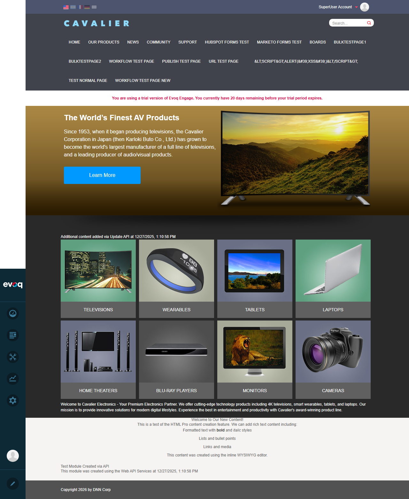
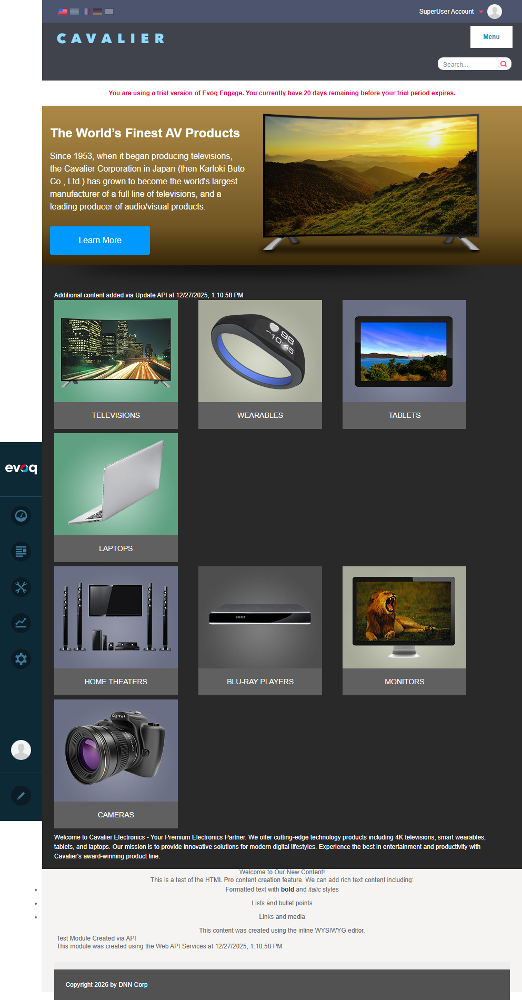
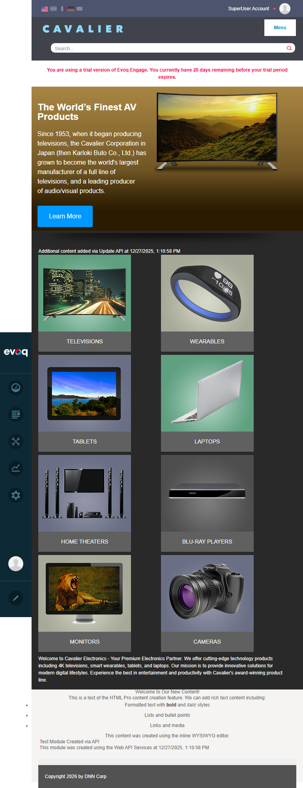
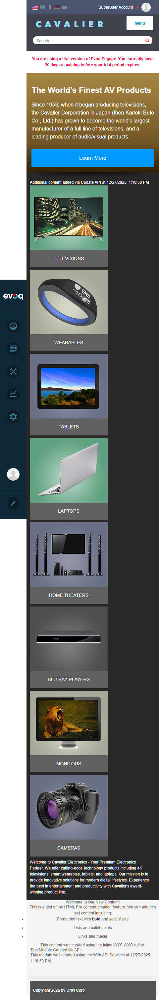

Bootstrap Grid Integration - Test Report
Feature Information
Feature Name Bootstrap Grid Integration Extension ContentLayout (Module) Priority Medium Description Integrates Bootstrap responsive grid system for column layouts. UI Location All Pages with Content Layout Relevant Files
Evoq Content/Modules/ContentLayout/Css/bootstrap.min.css
Evoq Content/Modules/ContentLayout/Components/ColumnSizesHelper.cs
Evoq Content/Modules/ContentLayout/View.ascx.cs
Test Summary
Test Scenario
Status
Verify Bootstrap CSS loading PASS Test responsive breakpoints PASS Verify column CSS classes PASS Test mobile responsiveness PASS Verify IE8 compatibility with respond.js PASS
Overall Result: 5/5 Tests Passed
Test 1: Verify Bootstrap CSS Loading
Status: PASS
What was tested
Verified that Bootstrap CSS file is properly loaded on pages with Content Layout modules.
Steps taken
Navigated to the home page at http://localhost:8081
Logged in as SuperUser (host/Pass123456)
Used browser JavaScript evaluation to check for Bootstrap stylesheet
Verified the stylesheet URL in the page head
Evidence
Bootstrap CSS found at: /DesktopModules/DnnCorp/ContentLayout/Css/bootstrap.min.css?cdv=132
The CSS file contains Bootstrap v3.2.0 grid system with .dnn-cl namespace prefix to prevent conflicts with site styles.
Screenshot
Test 2: Test Responsive Breakpoints
Status: PASS
What was tested
Verified that Bootstrap responsive breakpoints work correctly at different viewport widths.
Steps taken
Tested at 1280px width (Large breakpoint - lg: 1200px+)
Tested at 992px width (Medium breakpoint - md: 992px-1199px)
Tested at 768px width (Small breakpoint - sm: 768px-991px)
Observed column layout changes at each breakpoint
Evidence
Bootstrap grid classes found on content layout panes: col-lg-3 col-md-4 col-sm-6 col-xs-12
Viewport Width Active Breakpoint Columns Per Row Column Class 1280px Large (lg) 4 columns col-lg-3 (25%) 992px Medium (md) 3 columns col-md-4 (33.33%) 768px Small (sm) 2 columns col-sm-6 (50%)
Screenshots
Large Breakpoint (1280px) - 4 columns:

Medium Breakpoint (992px) - 3 columns:

Small Breakpoint (768px) - 2 columns:

Test 3: Verify Column CSS Classes
Status: PASS
What was tested
Verified that Bootstrap grid column CSS classes are correctly applied to Content Layout panes.
Steps taken
Used JavaScript to query all elements with class containing "col-"
Verified the CSS classes match Bootstrap grid pattern
Confirmed the .dnn-cl namespace class is applied to parent containers
Evidence
Found 8 content layout panes with Bootstrap column classes:
dnn_F30A_Pane1 - class: pane col-lg-3 col-md-4 col-sm-6 col-xs-12dnn_F30A_Pane2 - class: pane col-lg-3 col-md-4 col-sm-6 col-xs-12dnn_F30A_Pane3 - class: pane col-lg-3 col-md-4 col-sm-6 col-xs-12dnn_F30A_Pane4 - class: pane col-lg-3 col-md-4 col-sm-6 col-xs-12dnn_9977_Pane1 - class: pane col-lg-3 col-md-4 col-sm-6 col-xs-12dnn_9977_Pane2 - class: pane col-lg-3 col-md-4 col-sm-6 col-xs-12dnn_9977_Pane3 - class: pane col-lg-3 col-md-4 col-sm-6 col-xs-12dnn_9977_Pane4 - class: pane col-lg-3 col-md-4 col-sm-6 col-xs-12
Parent containers have .dnn-cl class applied (3 elements found):
TopPane dnn-cllayoutContainer container-fluid dnn-cl
Test 4: Test Mobile Responsiveness
Status: PASS
What was tested
Verified that content layout columns stack vertically on mobile devices (extra-small breakpoint).
Steps taken
Resized browser viewport to 480px width (mobile device simulation)
Verified all columns stack in a single column layout
Confirmed col-xs-12 class provides 100% width on mobile
Evidence
At 480px viewport width (xs breakpoint < 768px), all content items display in a single column:
TELEVISIONS (100% width)
WEARABLES (100% width)
TABLETS (100% width)
LAPTOPS (100% width)
HOME THEATERS (100% width)
BLU-RAY PLAYERS (100% width)
MONITORS (100% width)
CAMERAS (100% width)
Screenshot

Test 5: Verify IE8 Compatibility with respond.js
Status: PASS
What was tested
Verified that respond.js polyfill is included for IE8 media query support.
Steps taken
Inspected page source for respond.js inclusion
Verified IE conditional comment wrapper
Confirmed the script path exists in the module directory
Evidence
Found respond.js in page source with IE8 conditional comment:
<!--[if IE 8]><script src='/DesktopModules/DnnCorp/ContentLayout/ClientScripts/respond.min.js'></script><![endif]-->Code review of View.ascx.cs confirms the implementation in InjectRespondJsForIE8() method (line 172-184):
Uses unique identifier ContentLayout_RespondJs_IE8 to prevent duplicate injection
Adds script to page header only for IE8 browsers
Script path: {ControlPath}ClientScripts/respond.min.js
Observations
Bootstrap Version: The ContentLayout module uses Bootstrap v3.2.0 grid system (customized build from Bootstrap Customizer).Namespace Isolation: All Bootstrap classes are prefixed with .dnn-cl to prevent CSS conflicts with site themes. This is a best practice for modular CSS.Column Size Mapping: The ColumnSizesHelper.cs class maps percentage-based column sizes (25%, 50%, 75%, 33%) to Bootstrap grid classes. Custom sizes fall back to equal-width columns.IE8 Support: respond.js is conditionally loaded only for IE8 browsers using IE conditional comments, ensuring modern browsers don't load unnecessary polyfills.Grid Classes Applied: Content layout panes use responsive classes like col-lg-3 col-md-4 col-sm-6 col-xs-12 which provides a 4-3-2-1 column progression from large to mobile screens.
Test Report Generated: January 6, 2026
Tester: Claude AI (Automated Testing)